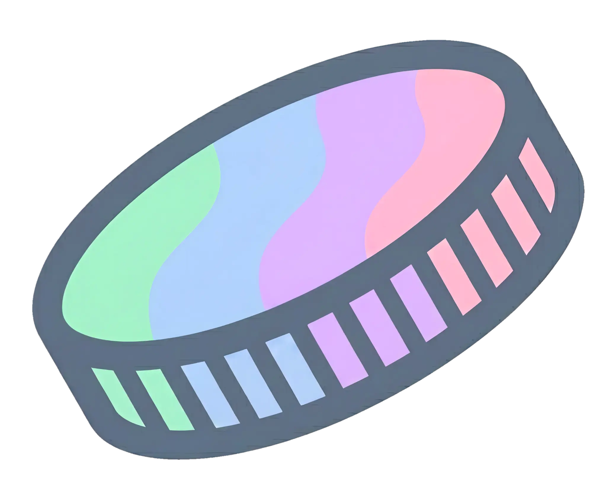

Cambi
Real-time currency converter and local-first payment manager solving everyday transaction friction in Venezuela.
The Problem
In Venezuela, official foreign exchange rates fluctuate constantly, and everyday mobile banking payments (Pago Móvil) require tedious copy-pasting of account numbers, national IDs, and bank codes. Poor cellular connectivity frequently interrupts transactions right at the checkout counter.
How It Works
A background PHP 8.4 cron worker scrapes official Central Bank (BCV) rates with automated fallback scrapers, caching rates in atomic local JSON files. The interface runs on Vanilla ES6+ and a Service Worker for 100% offline access.
The Pago Móvil manager stores all sensitive banking records purely in browser localStorage (zero PII sent to any server), instantly generating offline QR codes and clean WhatsApp payment summaries.